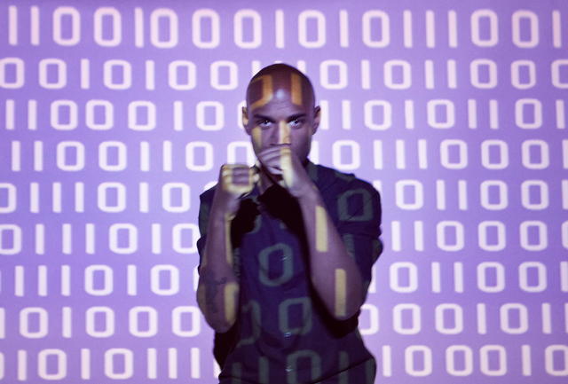

Presseklip

Foto: Petra Kleis til Ud og Se.
24. juli 2015 – P1 Debat: Har overvågning sat en stopper for privatlivets fred?
26. juni 2015 – P1 Debat: Er trangen til overvågning gået amok?
9. maj 2015 – DR2 Tema: Du bliver overvåget!
28. marts 2015 – Politiken (kronik): Fremtidens ’smarte’ storbyer bliver automatiske
15. februar 2015 – Aflyttet på Radio 24 Syv: LOGNING: Vi vil vide hvor du er – hele tiden
18. oktober 2014 – TV2 Go’morgen Danmark: Hvordan kan man sikre sig mod hackerne?
14. juni 2014 – Information: Enhedslisten: Staten skal lære borgerne digitalt selvforsvar
20. maj 2014 – HK/SAMDATA: Klædt på som digital meningsdanner
9. februar 2014 – DR2 Deadline: Debat: Dataindsamling, retssikkerhed og demokrati
15. september 2013 – Aflyttet på Radio 24 Syv: Det totale overvågningssamfund
10. september 2013 – Politiken (kronik): Vi lever i en fortidens dystopiske fremtidsvision
4. august 2013 – Nyhederne på Radio 24 Syv: Danskerne bekymrer sig ikke om deres privatliv på nettet
24. juli 2013 – DR: Filtre mod internetporno virker ikke
24. juli 2013 – P1 Morgen: Filtre mod internetporno virker ikke
31. marts 2013 – Aflyttet på Radio 24 Syv: Velkommen til Overvågningssamfundet – er det så slemt?
1. marts 2013 – Magasinet NOTAT: Bombardement væltede traktat
23. februar 2013 – BT: Rohde og Løkkegaard fremlage bankers forslag som deres egne
21. februar 2013 – Journalisten: Ophavsretten må ikke overtrumfe ytringsfriheden
12. februar 2013 – The Copenhagen Post: Internet surveillance laws under pressure
16. december 2012 – Agenda DR P1: Den navnløse generation tager ordet
28. september 2012 – Kulturkontoret DR P1: Ophavsret vs. kreativitet?
3. september 2012 – Information: Henrik Chulu: ’Anonymitet giver mulighed for at kommunikere frit’
1. juli 2012 – Ud og Se: På internettet kan alle være med
7. juli 2012 – Aflyttet Radio24syv: I et offentligt rum
5. juli 2012 – Politiken Kultur: Europa siger nej til omstridt Actatraktat
Internetpolitiske spørgsmål har med Actaprotesterne fået sit folkelige gennembrud – og de har vist, at mobilisering på nettet kan være et stærkt politisk værktøj, forklarer Henrik Chulu, der er talsmand for protestorganisationen Stop Acta Danmark.
4. juli 2012 – Information: ACTA nedstemt i Europa-Parlamentet
26. juni 2012 – The Copenhagen Post: State rules out anti-piracy letters
21. juni 2012 – P1 Debat: Jagten på piratkopister
20. juni 2012 – Version2: Slut med advarselsbreve til danske fildelingspirater
11. maj 2012 – Modkraft: Bitbureauet: Politikerne skal tænke sig bedre om
13. april 2012 – Berlingske 3. Sektion: Kulturbattle
»Plade- og filmbranchens problem er, at den før havde kontrol over hele sin værdikæde fra produktion over distribution. Med internettet har den mistet kontrollen, hvilket den forsøger at kompensere for ved at tvinge forbrugerne til at ændre adfærd. Hvis musik- og filmbranchen vil være relevant, må den tilfredsstille forbrugernes behov,« siger Henrik Chulu
1. marts 2012 – The Copenhagen Post: 10,000 strong: ‘Don’t ACTA fool’
28. februar 2012 – DR P6: Offbeat med Carsten Holm
27. februar 2012 – DR P6: Offbeat med Carsten Holm
27. februar 2012 – Modkraft: Massedemonstration mod censur
26. februar 2012 – Politiken: Man skyder efter fluer med kanonkugler
»Nu er det blevet forår i Danmark. Lad os stå sammen om, at det bliver et digitalt forår«.
26. februar 2012 – Politiken: Uundgåelig konflikt: Internettet er blevet en kampzone
»Traktaten er et mesterstykke i lobbyisme. Alle de lobbyister, der vil have strammet lovgivninger i de forskellige lande, kan nu pege på Acta og sige, at det tilskynder den til«.
26. februar 2012 – Politiken: Imod: ACTA er farlig
»Det er lovgivning foretaget på vegne af og implementeret af en generation, som ikke er vokset op med internet og ikke forstår det. Modstanden består af en ny generation, der er vokset op med og lever og ånder med nettet. Man kan nærmest sammenligne det med rock’n’roll i 50’erne, hvor en generation syntes, det var frygteligt«.
26. februar 2012 – Information: Et digitalt forår?
26. februar 2012 – Information: Internettet skubber til en fælles europæisk offentlighed
25. februar 2012 – Politiken: Fra Wien til Lyon og Aarhus: Europa gør klar til demonstration
25. februar 2012 – Aflyttet Radio24syv: Lørdag den 25. februar går internettet på gaden
25. februar 2012 – Ekstra Bladet: Flere tusinde ACTA-demonstranter på Christiansborg
25. februar 2012 – DR.dk: Tusinder demonstrerer for frit internet
25. februar 2012 – Ritzau: Acta-demo: Politikerne kan ikke ignorere os
25. februar 2012 – DR1 TV-Avisen 18.30: Tusindvis demonstrerede mod ACTA (6 minutter inde).
24. februar 2012 – Information (opinion): Grooveshark-kendelse åbner for hårdhændet internetcensur
24. februar 2012 – Politiken: EU forbyder overvågning på nettet
24. februar 2012 – Version2: Ny EU-dom gør ACTA-kritikeres frygt til skamme
24. februar 2012 – Politiken: 15.000 vil gå på gaden mod ACTA i morgen
23. februar – The Copenhagen Post (opinion): Why take to the streets against ACTA?
22. februar 2012 – Modkraft: KODA freder YouTube
21. februar 2012 – Modkraft: »YouTube kan blive den næste«
18. februar 2012 – Orientering DR P1: Politisk tøven om ACTA
18. februar 2012 – Politiken: Mørklagte papirer sår tvivl om dansk rolle i antipirat-aftale
18. februar 2012 – Ingeniøren: Det betyder ACTA ifølge juristen og den indædte modstander
10. februar 2012 – DR1 TV-Avisen 21.00: Ny EU-lovgivning skal bekæmpe ulovlig kopiering (18 min inde)
10. februar 2012 – The Copenhagen Post: Support for ACTA wanes as debate heats up
9. februar 2012 – Orientering DR P1: Aftale om net-pirateri på vippen
8. februar 2012 – Altinget (opinion): Internetpolitik må ikke overlades til ophavsrettens lobbyister
7. februar 2012 – Globus Radio24syv: Forsøger kapitalister og voksne fra den gamle verden at beskytte egne interesser ved at begrænse friheden på internettet?
15. november 2011 – Politiken: Antipirater vil lukke for ulovlig musik
24. oktober 2011 Politiken Debat: Jeg vil ikke overvåges på nettet
»Muligheden for at være anonym på internettet handler ikke om plade- og filmbranchens ophavsrettigheder, men om almindelige menneskers borgerlige frihedsrettigheder, som kommunikationsfrihed og retten til privatlivets fred.«
21. august 2011 Politiken Debat: Ophavsret eller ytringsfrihed?
»Alt imens politikere og journalister snakker løs om ytringsfrihed, nægter de at forholde sig til muligheden for at lukke ned for politisk kommunikation online, under påskud af at det krænker ophavsretten. Hvis ikke der bliver taget hul på debatten om en revision af ophavsretten, vil den blive fremtidens væsentligste begrænsning af ytringsfriheden.«
3. august 2011 – The Copenhagen Post: Street artist’s work opens old wounds